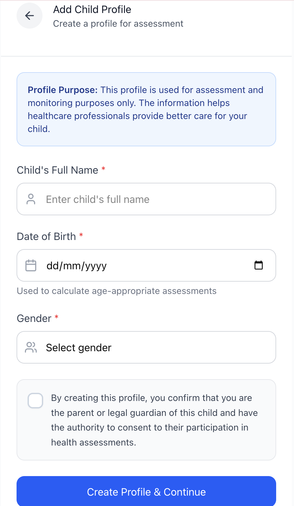
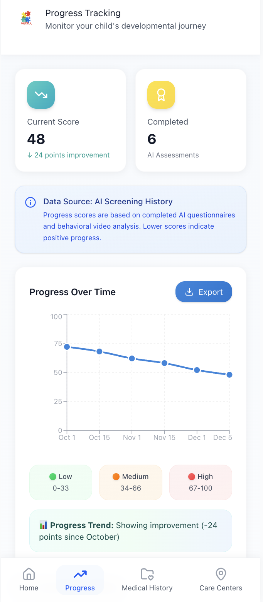

From observations at home to a clinical conversation
The proposed Medka DX workflow supports healthcare professionals assessing autism concerns in children aged 18 to 72 months with developmental concerns.
Open the Medka DX prototypeWhat families and clinicians do
Create a child profile
A parent or caregiver creates a child profile and answers guided questions about development and everyday routines.
Add examples from home
In the proposed app, caregivers can share short examples of play or behaviour to provide context alongside their answers.
Review the information with a clinician
The clinician completes a separate medical questionnaire and considers the caregiver’s input alongside the child’s history. The pitch outlines telehealth as one route for that discussion.
Inside the Medka DX prototype
Explore the proposed setup and follow-up screens. Select a screenshot to enlarge it. The scores, appointments, and care listings are examples.


The prototype explains the purpose of a child profile and asks a parent or guardian to confirm their authority to consent.


The prototype shows previous screening entries and a chart of example scores.

Medical History brings together appointments, clinician profiles, and prescription records.

The proposed directory groups centres by city and shows examples of contact and service details.
What a screening can tell you
Screening can identify when further developmental evaluation may be appropriate. Diagnosis requires a qualified healthcare professional to put the screening result in context with the child’s history and another assessment where needed.
The Medka DX pitch describes research into machine learning for caregiver questionnaires and video observations. A clinician interprets the information and discusses the next steps with the family.
Read the CDC guide to autism screening